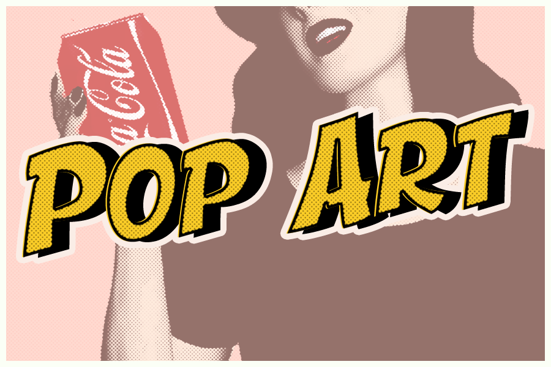
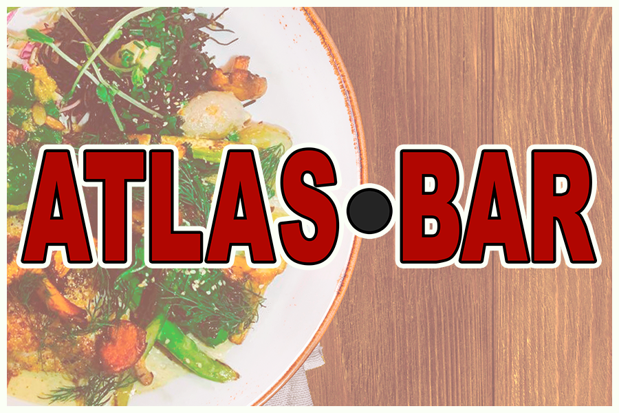
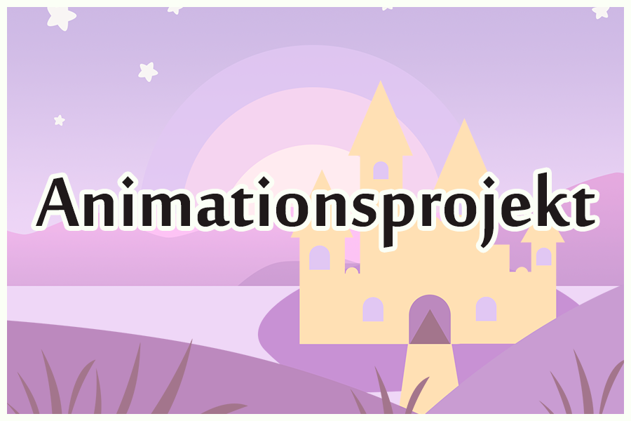
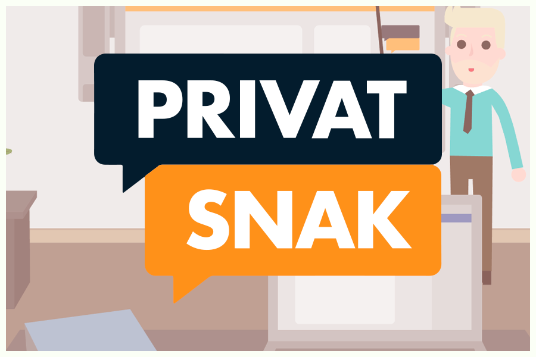
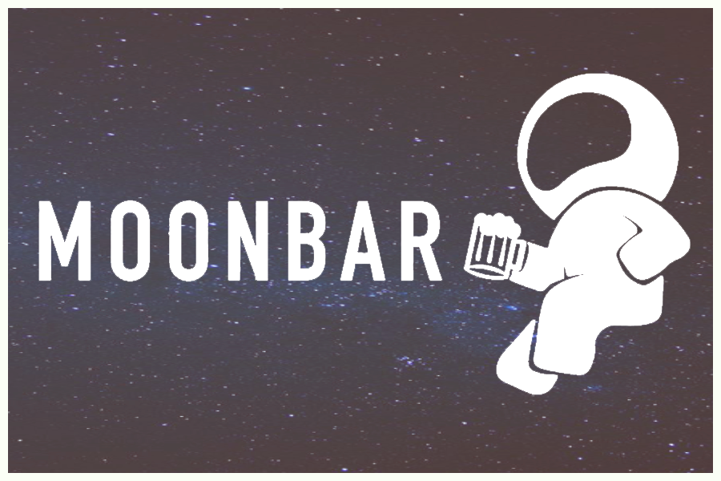
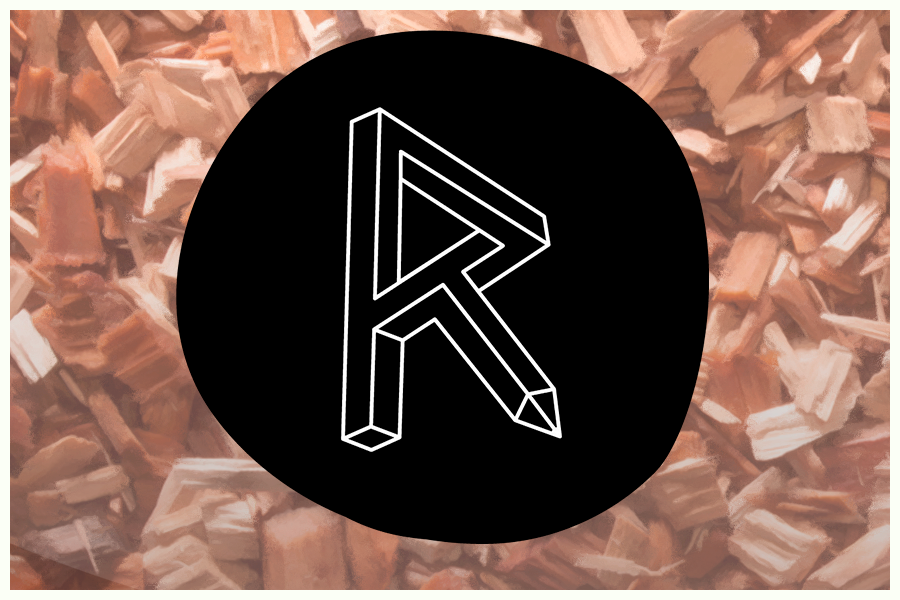

Cases







Opgaven: Opgaven bestod af at lave en hjemmeside, der skabte et overblik over en stilart. Formålet med opgaven var at lære os om basic HTML og CSS, samt hvordan flexbox fungerer. Derudover skulle hjemmeside formuleres så den var passende for en demografi der bestod af ca. 13-årige.
Løsning: I min udførelselse af opgave skulle jeg lave en hjemmeside om Popkunst, hvor jeg ladge vægt på stilartens udtryk i mit hjemmeside design, samt at det indhold hjemmesiden indeholdte var passende til stilarten. Derudover prøvede jeg også at lægge vægt på min målgruppe gennem den tekst der blev formuleret til hjemmesiden ved at benytte mig af kort og præcis tekst, der gav læseren relevante informationer der var forståelige for målgruppen.
Opgaven: Denne opgave bestod af at kontakte en potentiel kunde, der ville være interesseret i at få lavet en ny hjemmeside. Derudover skulle der laves en virksomhedsvideo, der viste virksomhedens faciliteter frem. Til dette kontaktede min gruppe Atlas Bar, som i opgaven blev benyttet som vores kunde.
Løsning: Kunden vill gerne have en hjemmeside der bedre reflekterede stedet, og vi fandt efter megen analyse fandt en række faktorer der kunne forbedres. Til dette benyttede vi os af vores allerede tilegnede forståelser for hjemmeside design og webdevelopment fra tidligere forløb. Efter vi havde været på lokation, valgte vi at udvikle hjemmesidens design udfra den udsmykning som baren selv benyttede sig af.

Opgaven:
Løsning:
Opgaven:
Løsning:
Klik her for at at se den færdige animation
Klik her for at læse om Idé, stil og struktur